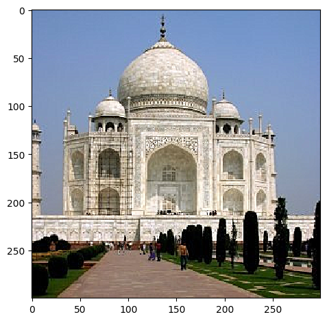
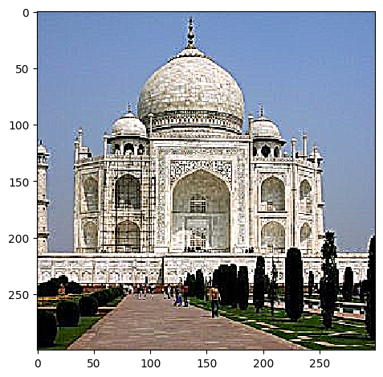
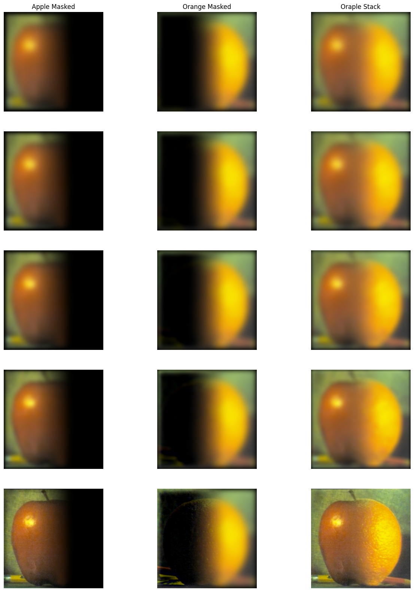
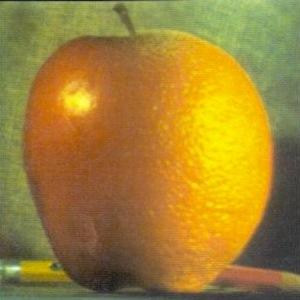
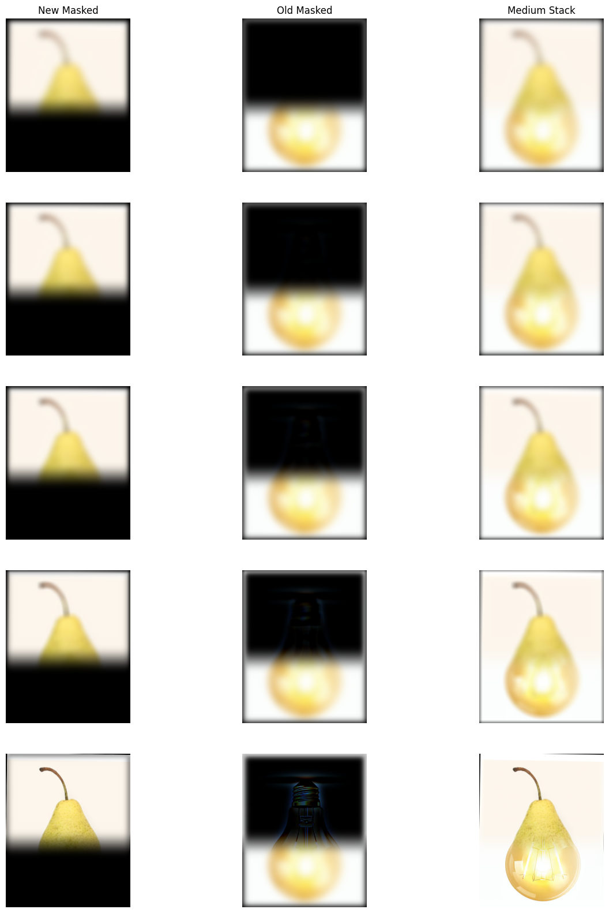
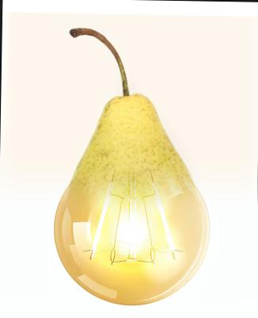
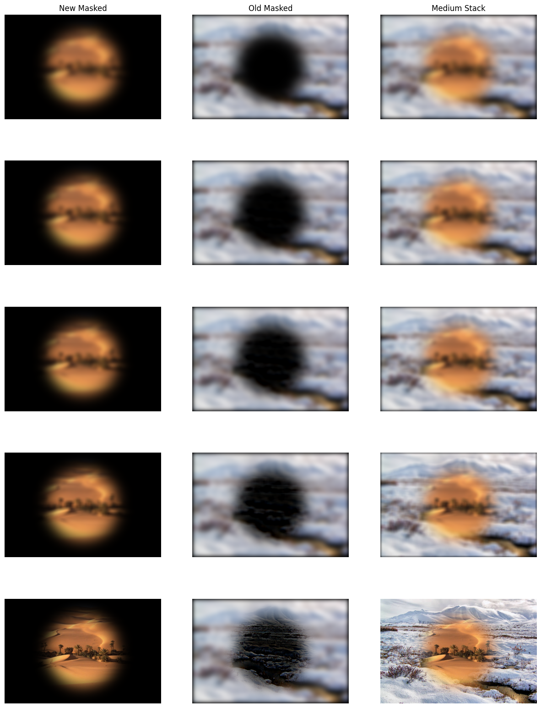
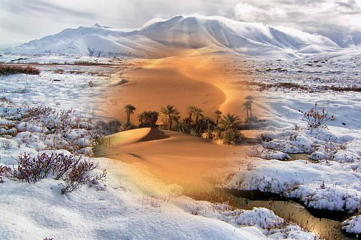

Taj Unsharpened

Taj Sharpened

Taj Oversharpened
Tobias Worledge, Fall 2024
This project experiments with low-pass and high-pass filters using a Gaussian kernel. In doing so, we implement image sharpening, hybrid images, and masked images.
We define two finite difference operators D_x = [1, -1] and D_y = [1,
-1].T that we can use to compute the gradient of an image. By convolving
the cameraman image with the D_x operator, we can compute the horizontal
gradient of the image. That is, the difference in pixel values between
each pixel and the pixel to its right. Similarly, by convolving the
cameraman image with the D_y operator, we can compute the vertical
gradient of the image; the difference in pixel values between each pixel
and the pixel below it.
By combining these two gradients, we can compute the magnitude of the
gradient of the image. This is useful for edge detection as the magnitude
of the gradient is large at edges and small at smooth regions.
X Convolution
Y Convolution
X + Y Convolution
X Convolution
Y Convolution
X + Y Convolution
Unfortunately, we're picking up too much noise from the image when
computing these edges. We can see this in the foreground of the cameraman
image where there are speckles of white pixels. To fix this, we can apply
a Gaussian filter to the image before computing the gradient. This will
remove higher-frequency noise from the image and produce a smoother
gradient.
By doing so, we get a much cleaner gradient image that only displays the
important edges!
X Convolution
Y Convolution
X + Y Convolution
What a lovely result! We no longer have the white pixel speckles in the
foreground and we've retained the important edges in the scene. The edges
have become wider and more pronounced, which makes reasonable sense
because the Gaussian filter has smoothed the image which increases the
area of the edges.
We are also able to combine the Gaussian filter with the X and Y finite
difference operators to create a DoG convolution.
Now that we know how to isolate high frequencies in an image, we can use that to add more high frequencies in an image to make it sharper!
Taj Unsharpened
Taj Sharpened
Taj Oversharpened
This camel is almost too blurry to resharpen well. I think this sharpening process works well on more clearly contrasting edges, unlike the camel's color and the background.
Camel Unsharpened
Camel Sharpened

Camel Oversharpened
When we first blur the image and then attempt to resharpen it, we get interesting results! The image becomes sharper, but we also introduce unavoidable noise into the image from the Gaussian filter. The Gaussian filter is lossy and thus there is no sharpening filter that will perfectly restore the original image. We can notice this when examining the specific blades of grass that are lost after blurring and resharpening the image.
Grass
Grass Blurred
Grass Re-sharpened
Let's create some cool images through combination! One cool idea is to combine the low frequencies of one image and the high frequencies of another. By doing so, we create an image that can look like both of the original images, depending on how it is viewed.

Derek

Nutmeg
Derek Cat
Derek
Derek Filtered
Cat
Cat Filtered
Derek Cat
Let's do this with an angry and happy person!
Happy
Angry
Happy Angry
Happy
Happy Filtered
Angry
Angry Filtered
Happy Angry
Here's an example of one that didn't work very well. It seems like creating hybrid images this way requires the two images to have similar general shapes. In this case, Einstein's picture is oriented differently than the picture of the angry man. That makes it much harder to create a hybrid image that looks like both of them.

Einstein
Angry
An Angry Einstein
Ok, creating hybrid images is cool, but how else can we do this? What if we tried to blend images with a mask, so we include all frequencies from both images, but just in different locations in the image! Multiresolution blending combines two images by merging details at different spatial frequencies using Gaussian and Laplacian stacks. First, Gaussian stacks (progressively blurred versions) and Laplacian stacks (high-frequency details) are created for each image. A Gaussian stack is also generated for a mask, which determines which parts of each image appear in the final blend. At each level, the Laplacian stacks of both images are blended using the mask, allowing smooth transitions between regions. Finally, the blended image is reconstructed by successively upsampling and adding the levels in the blended Laplacian stack. This technique allows seamless blending of textures and features from both images across different scales.
Stack
Final Result
Stack
Final Result
Let's try an irregular filter to create a portal-like effect on two different nature pictures!
Stack
Final Result
